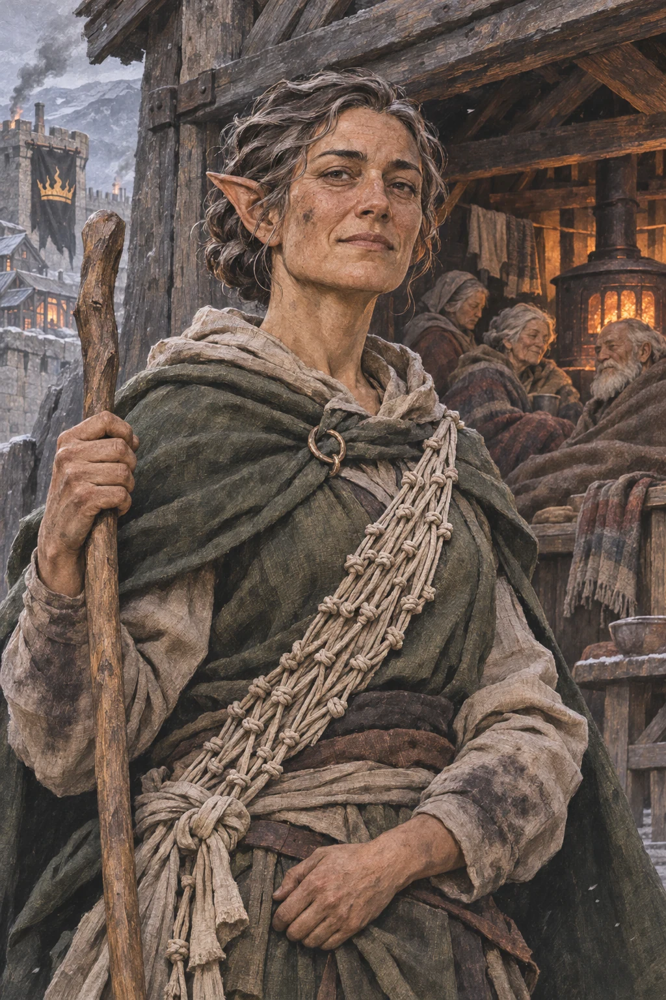
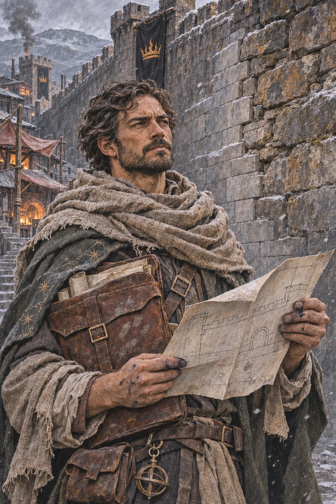
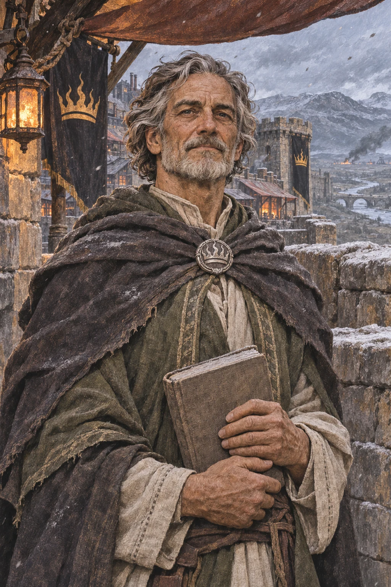
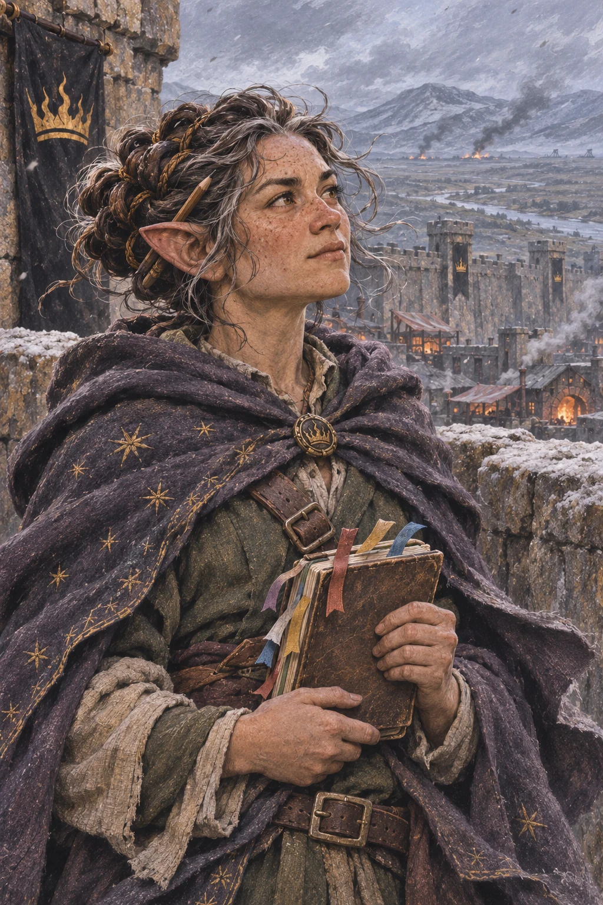

31 лет · воин · уровень 3
Тарна Брик
Стражница Северных ворот, летучая смена Харвена
Здоровье 31 · КД 11 · Скорость 30 футов
СИЛ 16 · ЛОВ 12 · ТЕЛ 16 · ИНТ 10 · МДР 12 · ХАР 10
Длинный меч, ручной топор.
Дворфийка с короткой седой прядью, щитом в старых царапинах и городской перевязью; на плечах зола, у пояса — рогатина, которой сталкивают крюки с зубцов.
Вы выросли у ворот и десять лет стоите смены под Харвеном Орстом; его почерк на дощечках приказов узнаете из сотни. Теперь вы в летучей смене: бежите туда, где стену некому держать.
Связь
Оллир однажды вернулся за вашим потерявшимся напарником; вы обещали ему больше не закрывать проход, пока не пересчитаете своих.
В центре внимания
Держать лестницу и пролом плечом к плечу с напарником; сталкивать крюки и лестницы рогатиной; стоять на Коронных ступенях до последнего; спорить с Харвеном о том, что такое город, — вслух и при свидетелях.
Личный вопрос
Чей приказ вы исполните, если он отдаёт стену?

26 лет · плут · уровень 3
Оллир Пень
Городской посыльный: знает, кто где стоит на стене
Здоровье 24 · КД 13 · Скорость 30 футов
СИЛ 10 · ЛОВ 16 · ТЕЛ 14 · ИНТ 14 · МДР 12 · ХАР 12
Рапира, короткий лук.
Невысокий человек в выцветшем плаще, с сумкой донесений, медными застёжками разного размера и рогом посыльного на ремне.
Ваши ноги связывают пять участков стены с Коронным двором. Вы первым узнаёте, где сотня ушла, а где пришла, и решаете, в каком порядке это донести. В сумке у вас ещё и белое полотнище — в несущего его по обычаю не стреляют.
Связь
Вы уважаете Радею за то, что она однажды отказалась бросить человека ради вашего срочного письма.
В центре внимания
Носить вести между участками и знать, где пусто; трубить в рог, когда нужно позвать тех, кто обещал прийти; идти под белым полотнищем туда, куда с оружием не пройти.
Личный вопрос
Что донесёте первым — приказ или правду о нём?

42 лет · жрец · уровень 3
Радея Сажень
Хранительница приюта у Коронного двора
Здоровье 24 · КД 11 · Скорость 30 футов
СИЛ 12 · ЛОВ 12 · ТЕЛ 14 · ИНТ 10 · МДР 16 · ХАР 14
Посох. Заклинания: «Лечащее слово», «Обнаружение магии».
Эльфийка с коротко собранными волосами, дорожным посохом и перевязью с узелками имён; рукава в саже от печей приюта.
В старом амбаре у Коронного двора вы принимаете стариков и детей из кварталов, где стена трещит. Каждый узелок на перевязи — имя того, кого вы обещали не потерять. Амбар не резиновый.
Связь
Вонда приносит вам вести со стены, даже когда они тяжелее ран.
В центре внимания
Выводить семьи из кварталов под ударом и вести их по именам; держать приют, когда в него просятся все; поднимать упавших Целительным словом там, где стоять страшнее всего.
Личный вопрос
Как сказать «больше не вмещу», не вынося приговор?

35 лет · волшебник · уровень 3
Демек Харр
Городской землемер: знает, на чём стоит каждая башня
Здоровье 20 · КД 12 · Скорость 30 футов
СИЛ 8 · ЛОВ 14 · ТЕЛ 14 · ИНТ 16 · МДР 12 · ХАР 12
Посох. Заклинания: «Обнаружение магии», «Туманный шаг».
Человек в широком рабочем шарфе, с чернильными пятнами на пальцах и футляром складных чертежей стены; на чертежах — серые отпечатки золы.
Вы чертили эту стену и знаете её изнутри: где старая кладка, где новая, какая башня на чём построена. Теперь по вашим чертежам решают, куда ставить людей.
Связь
Суня знает обыденные проходы лучше вас; вы договорились исправлять чертёж, когда жизнь расходится с ним.
В центре внимания
Читать стену по трещинам и чертежам и говорить вслух, что она выдержит; объяснять, что потеряет квартал, если участок отдать; Туманным шагом успевать туда, где нужен один человек.
Личный вопрос
Зачеркнёте ли любимую часть города ради жителей?

29 лет · воин · уровень 3
Вонда Кресс
Старшая городского резерва
Здоровье 31 · КД 11 · Скорость 30 футов
СИЛ 16 · ЛОВ 12 · ТЕЛ 16 · ИНТ 10 · МДР 12 · ХАР 10
Длинный меч, ручной топор.
Полуорчиха с тёмной косой, починенным наплечником и деревянным жетоном родного двора на шнурке.
Резерв — последние люди, которых нет на схеме. Добровольцы верят вам, потому что вы делите с ними неудобные смены; бессмертия вы им не обещали. Жетон родного двора однажды поднимет его людей на стену — но только один раз.
Связь
Тарна научила вас отдавать приказ об отходе ясно; теперь вы иногда лучше неё видите момент для этого приказа.
В центре внимания
Решать, куда пойдёт резерв; держать пролом, когда за спиной дома; поднять жетоном свой двор в ту ночь, когда без него не выстоять.
Личный вопрос
Кому отдадите последнюю сотню?

34 лет · плут · уровень 3
Суня Ферт
Представительница Рабочих дворов
Здоровье 24 · КД 13 · Скорость 30 футов
СИЛ 10 · ЛОВ 16 · ТЕЛ 14 · ИНТ 14 · МДР 12 · ХАР 12
Рапира, короткий лук.
Дворфийка в тёмном жилете, с ярким платком и тяжёлой связкой ключей от проходных и навесов мастерских.
Вам поручили говорить от имени мастерских. Вы знаете клейма всех дворов квартала и ключи от всех проходных — и не имеете права обещать чужой труд.
Связь
Демек выслушал вашу поправку к городскому чертежу; вы собираетесь выслушать его, когда привычный путь окажется закрыт.
В центре внимания
Узнавать железо и людей по клейму; открывать и запирать проходные Рабочих дворов; говорить с Журной и её рабочими прямо, когда другим они не ответят.
Личный вопрос
Что скажете Журне о её железе?

55 лет · жрец · уровень 3
Нель Тор
Свидетель городских клятв; дополнительное место
Здоровье 24 · КД 11 · Скорость 30 футов
СИЛ 12 · ЛОВ 12 · ТЕЛ 14 · ИНТ 10 · МДР 16 · ХАР 14
Посох. Заклинания: «Лечащее слово», «Обнаружение магии».
Человек с мягким голосом, посеребрённой застёжкой и тетрадью обещаний в простой ткани; страницы присыпаны золой.
Вы следите, кому и что обещано в эту осаду — соседям, кварталам, сотням. Слово, данное на стене, вы записываете так же бережно, как данное в зале.
Связь
Радея доверяет вам разговоры, для которых у неё не осталось времени; вы не считаете это меньшей службой.
В центре внимания
Помнить данные обещания и напоминать о них вслух; стоять на участке в паре или одиночкой; брать своё дело, когда отряд делится на нити. Ни одна улика и ни один путь не заперты за вами.
Личный вопрос
Какое обещание вы откажетесь освящать, даже если его хотят услышать все?

24 лет · волшебник · уровень 3
Ирса Медь
Ученица городских наблюдателей; дополнительное место
Здоровье 20 · КД 12 · Скорость 30 футов
СИЛ 8 · ЛОВ 14 · ТЕЛ 14 · ИНТ 16 · МДР 12 · ХАР 12
Посох. Заклинания: «Обнаружение магии», «Туманный шаг».
Гномка в просторном плаще с вышитыми звёздами, с небольшим блокнотом, где палочками отмечены залпы, и разноцветными лентами закладок.
С башен вы считаете залпы и видите, куда разворачивают рычаги катапульт. Вы привыкли отличать увиденное от предполагаемого и хотите сохранить эту привычку среди слухов осады.
Связь
Оллир однажды исправил неверное донесение после вашей спокойной проверки; вы оба цените такую честность.
В центре внимания
Считать залпы Вдовы, Ворчуна и Жаровни и говорить, куда они смотрят; стоять на участке в паре или одной; проверять слух до того, как он станет приказом. Ни одна улика и ни один путь не заперты за вами.
Личный вопрос
Признаетесь ли вы в неопределённости, когда окружающие ждут уверенного ответа?